The O.O.D. generalization capabilities of visuomotor policies empowered by
DemoGen-generated synthetic demonstrations,
given only one human-collected demonstration per task.
Livestreaming: Train Live & Test Live
DemoGen is simple but it really works! To highlight its efficiency and effectiveness, we livestreamed its full pipeline: (1) collecting one source demo,
(2) generating synthetic demos with DemoGen, (3) training Diffusion Policy, and (4) testing the trained policy on the real robot. The pipeline was finished in
around 30 minutes, and the trained policy achieved a 100% success rate with O.O.D. configurations on a challenging Jar-Opening task.
An audience of 2,282 watched the livestream at REDnote (小红书, a Chinese social media platform) on Mar 12, 2025. The playback is available on Bilibili.
Abstract
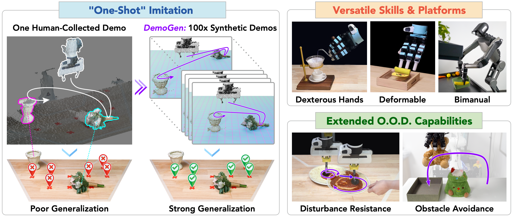
Visuomotor policies have shown great promise in robotic manipulation but often require substantial amounts of human-collected
data for effective performance. A key reason underlying the data demands is their limited spatial generalization capability,
which necessitates extensive data collection across different object configurations. In this work, we present DemoGen,
a low-cost, fully synthetic approach for automatic demonstration generation. Using only one human-collected demonstration per task,
DemoGen generates spatially augmented demonstrations by adapting the demonstrated action trajectory to novel object configurations.
Visual observations are synthesized by leveraging 3D point clouds as the modality and rearranging the subjects in the scene via
3D editing. Empirically, DemoGen significantly enhances policy performance across a diverse range of real-world manipulation tasks,
showing its applicability even in challenging scenarios involving deformable objects, dexterous hand end-effectors, and bimanual platforms.
Furthermore, DemoGen can be extended to enable additional out-of-distribution capabilities, including disturbance resistance and obstacle avoidance.
DemoGen Methods
DemoGen adapts actions in the source demonstration to novel object configurations by incorporating the ideas of Task and Motion Planning (TAMP).
Specifically, the source trajectory is decomposed into object-centric motion segments moving in free space and skill segments involving on-object manipulation through contact.
During generation, the skill segments are transformed as a whole, and the motion segments are replanned via motion planning.
The corresponding visual observations are synthesized by choosing 3D point clouds as the modality and rearranging the objects and robot end-effectors in the scene via 3D editing.
DemoGen for Spatial Generalization
Simulated Experiments
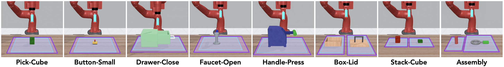
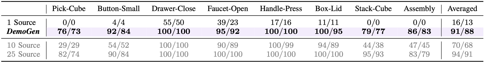
The effectiveness of DemoGen is verified on 8 modified MetaWorld tasks with enlarged object randomization ranges.
We report the maximum/averaged success rates over 3 seeds of visuomotor policies trained on DemoGen-generated datasets with only one
source demonstration per task. The results indicate DemoGen has the potential to maintain the policy performance with over 20x reduced human effort for data collection.
Real-World Protocols
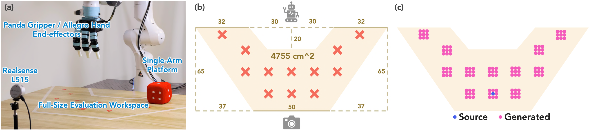
We adhere to a rigorous protocol for evaluating spatial generalization. (a) Workspace setups. (b) The full-size evaluation
workspace covering the full entend of the robot end-effectors on the table surface.
(c) The DemoGen generation strategy targeting the evaluated configurations along with small-range perturbations.
Tasks & Source Demonstrations
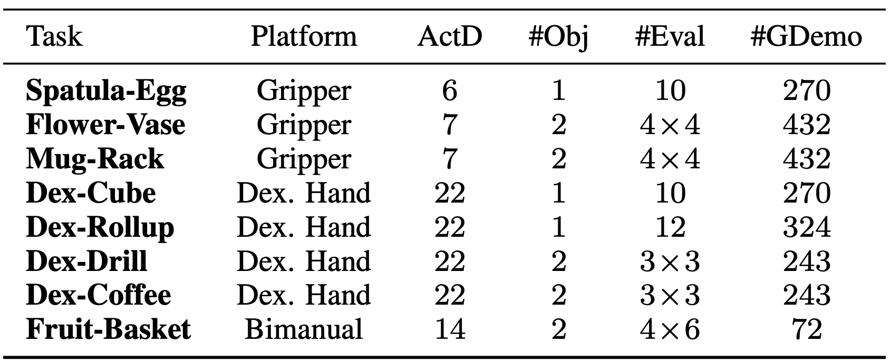
We successfully apply DemoGen to a diverse range of tasks on single-arm & bi-manual platforms, using gripper & dexterous-hand end-effectors,
from third-person & egocentric visual observation viewpoints, and with rigid-body & deformable/fluid objects.
To minimize the human effort, we collect only one source demonstration per task for subsequent demonstration generation.
Evaluation Videos
For quantitative evaluation, we conudct a total of 530 policy rollouts on the 8 tasks with fully randomized object configurations
within the feasible workspace range. Here, we provide the videos of 4 successful rollouts and 1 failed rollout for each of the 8 tasks.
Quantitative Results
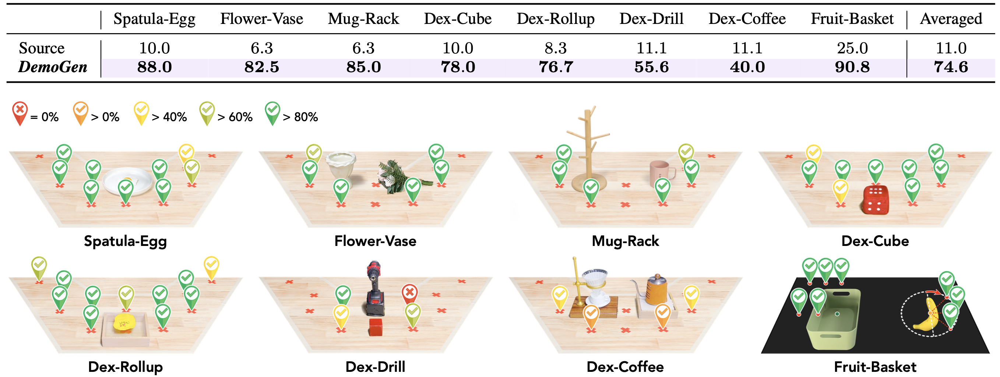
Compared with the source demonstrations, DemoGen-generated datasets enable the agents to display a more adaptive response to
diverse evaluated configurations, resulting in significantly higher success rates. Additionally, we visualize the spatial heatmaps
of success rates for the evaluated configurations, showing diminished success rates on configurations more far away from the demonstrated ones.
We attribute this decline to the visual mismatch problem caused by single-view observations.
Time Cost for Generating Real-World Demonstrations
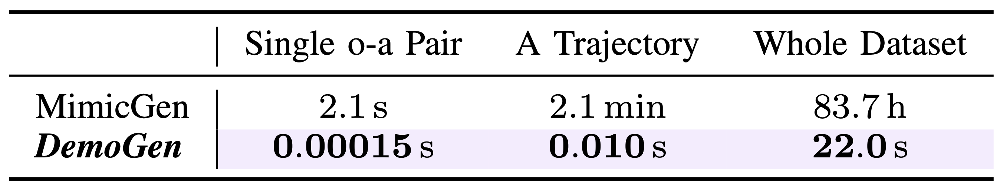
DemoGen adopts a cost-effective fully synthetic manner. It takes DemoGen only 22 seconds to generate 2214
demonstration trajectories, that is, ~147k observation-action pairs.
In contrast, MimicGen generates demonstrations via expensive on-robot rollouts,
hindering its deployment in real-world scenarios.
DemoGen for Disturbance Resistance
Augmentation for Disturbance Resistance (ADR)
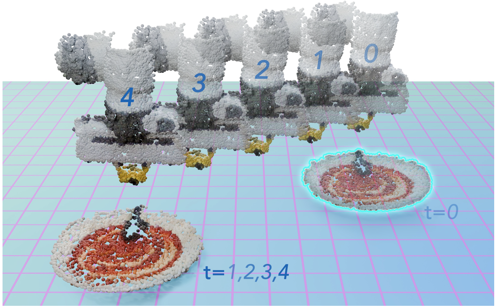
To mimic the recovery process from external disturbance, we develop a specialized generation strategy called
Augmentation for Disturbance Resistance (ADR), where asynchronous transformations are applied to the disturbed object
and the robot end-effector.
Evaluation Videos
For quantitative comparison, we conduct policy rollouts using both the DemoGen w/ ADR-enabled policy and regular
DemoGen-enabled policy, where we manually drag the pizza crust twice towards the neighboring cross markers.
We repeat each setting for 5 times to produce reliable results. Here, we provide the videos for all of the 50 policy rollouts.
Quantitative Results
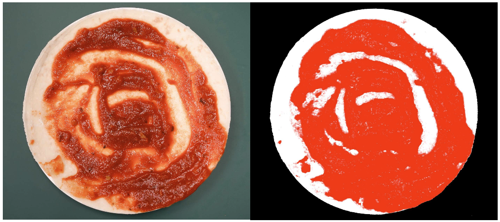
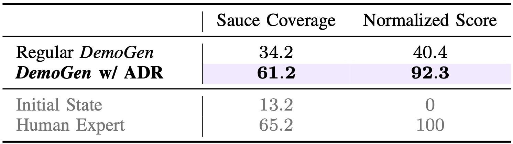
For quantitative evaluation, we take pictures of the pizza crust after sauce spreading and calculate the sauce coverage on the crust
via color thresholding. Additionally, we report a normalized sauce coverage score, where 0 represents no operation taken and 100
corresponds to human expert performance. The ADR strategy significantly outperforms the baseline strategy designed for spatial
generation; it even approaches the human expert performance. This highlights the ability to resist disturbances does not emerge
naturally but is acquired through targeted disturbance-involved demonstrations.
Robustness under Multiple Disturbances
Still starting with only one human-collected demonstration as the source demonstration, we show that
the DemoGen w/ ADR-enabled policy is robust under up to 5 times of random disturbances in a row.
DemoGen for Obstacle Avoidance
Augmentation for Obstacle Avoidance
To generate obstacle-involved demonstrations, we augment the real-world point cloud observations by sampling points
from simple geometries, such as boxes and cones, and fusing these points into the original scene. Obstacle-avoiding
trajectories are generated by a motion planning tool, ensuring collision-free actions.
Evaluation Videos
For evaluation, we position obstacles with diverse shapes in the middle of the workspace. The DemoGen-enabled policy successfully avoids various unseen obstacles.
Notably, in scenarios without obstacles, the agent follows the lower trajectory observed in the source demonstrations, indicating its responsiveness to environmental variations.
Empirical Study: Spatial Generalization of Visuomotor Policies
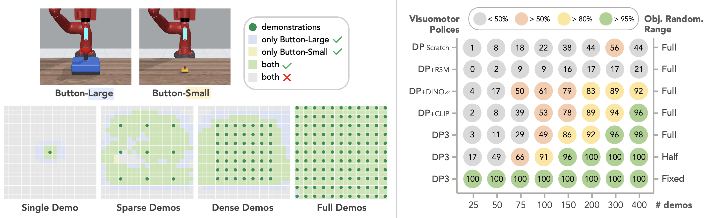
(Left) Qualitative visualization of the spatial effective range. The grid maps display discretized tabletop workspaces
from a bird's-eye view under different demonstration configurations. In general, the spatial effective range of visuomotor policies
can be approximated by the union of the areas surrounding the demonstrated object placements.
(Right) Quantitative benchmarking on the spatial generalization capacity. Both 3D representations and pre-trained
2D visual encoders contribute to improved spatial generalization capabilities. However, they are unable to fundamentally solve
the spatial generalization problem. The spatial capacity is still developed through extensive traversal of the workspace from the given demonstrations.
Limitation: The Visual Mismatch Problem
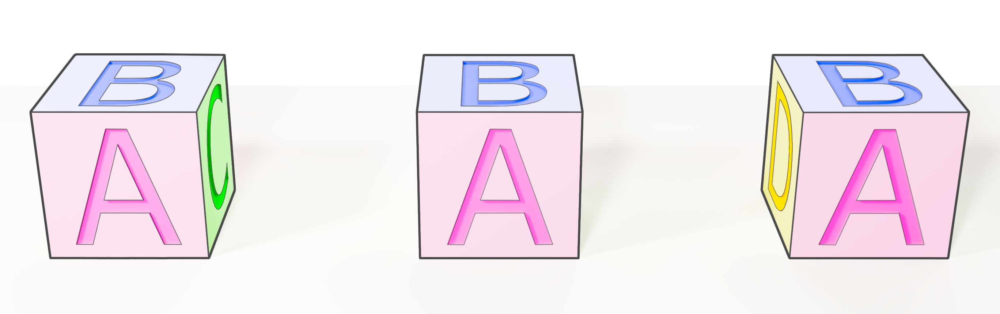
As objects move through 3D space, their appearance changes due to variations in perspective. Under the constraint of a single-view
observation, synthetic demonstrations consistently reflect a fixed side of the object's appearance seen in the source demonstration.
This discrepancy causes a visual mismatch between the synthetic and real-captured data.
Acknowledgments
We would like to give special thanks to Galaxea Inc. for providing the R1 robot and
Jianning Cui, Ke Dong, Haoyin Fan, and Yixiu Li for their technical support.
We also thank Gu Zhang, Han Zhang, and Songbo Hu for hardware setup and data collection,
Yifeng Zhu and Tianming Wei for discussing the controllers in the simulator,
and Widyadewi Soedarmadji for the presentation advice.
Tsinghua University Dushi Program supports this project.
BibTeX
@article{xue2025demogen,
title={DemoGen: Synthetic Demonstration Generation for Data-Efficient Visuomotor Policy Learning},
author={Xue, Zhengrong and Deng, Shuying and Chen, Zhenyang and Wang, Yixuan and Yuan, Zhecheng and Xu, Huazhe},
journal={arXiv preprint arXiv:2502.16932},
year={2025}
}